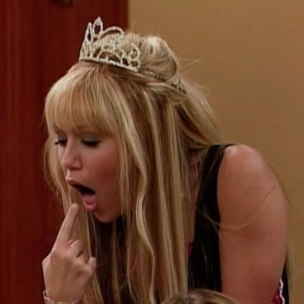

Smells Like Teen Sellout

Hannah har lansert en parfyme-linje, men hun misliker den sterkt fordi duften av bringebær gjør henne kvalm.
Hun står overfor et vanskelig valg: skal hun være ærlig med fansen om sin aversjon mot parfymen, eller skal hun late som om hun elsker den for å sikre salget?
Til slutt bestemmer hun seg for å promotere og selge parfymen.
Men under et TV-intervju klarer hun ikke å holde sannheten tilbake og innrømmer at hun egentlig hater duften.
Etter denne ærlige innrømmelsen velger hun å trekke produktet fra markedet, og gjennom denne prosessen lærer hun hvor viktig det er å være ærlig.
Trivia:
- Hannah sier ærlig at hun aldri har luktet noe lignende før,
men parfymen lukter bringebær som minner henne om barndomstraumer - Navnet på episoden er en referanse til sangen "Smells Like Teen Spirit" av Nirvana.